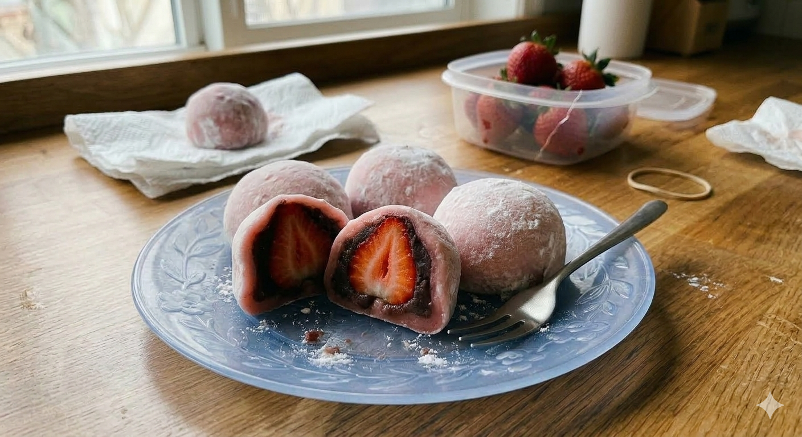

# Homemade Strawberry Mochi (Daifuku)
Mochi is a traditional Japanese treat made from sweet rice flour. It’s soft, chewy, and perfectly sweet! This version features a fresh strawberry wrapped in sweet red bean paste.
---
### ⏱️ Quick Stats
* **Prep Time:** 20 mins
* **Cook Time:** 5 mins
* **Servings:** 6 Mochi balls
---
### 🛒 Ingredients
* **1 cup** Mochiko (Sweet Glutinous Rice Flour)
* **1/4 cup** Sugar
* **1 cup** Water
* **Cornstarch** (for dusting your hands and surface)
* **6** Fresh Strawberries (washed and hulled)
* **1/2 cup** Sweet Red Bean Paste (Anko)
---
### 🍳 Instructions
1. **Prepare the Fruit:** Wrap each strawberry in a thin layer of red bean paste, leaving the very tip of the strawberry showing if you like. Set these aside.
2. **Mix the Dough:** In a microwave-safe bowl, whisk together the rice flour, sugar, and water until smooth.
3. **Cook the Mochi:** Cover the bowl loosely with plastic wrap. Microwave for 1 minute. Stir with a wet spatula. Microwave for another 1 minute, then stir again. The dough should look translucent and very sticky.
4. **The Dusting Step:** Heavily dust your clean counter with cornstarch. Scrape the hot dough onto the starch.
5. **Shape the Balls:** Cut the dough into 6 equal pieces. Flatten one piece into a circle. Place your strawberry/bean paste ball in the center.
6. **Seal it up:** Carefully pull the edges of the dough over the strawberry and pinch it shut at the bottom.
7. **Cool & Serve:** Let them sit for a few minutes to firm up. Enjoy fresh!
---
> **💡 Chef's Tip:** Mochi dough is incredibly sticky! Always keep your hands covered in cornstarch while handling it to prevent a mess.
